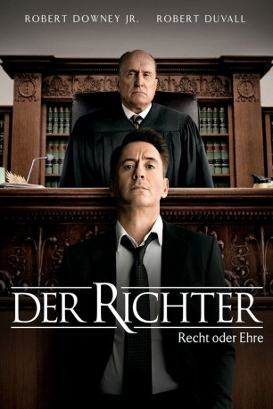

#227 Der Richter - Recht oder Ehre
Alternativ: The Judge
Auszeichnungen: für 1 Oscars nominiert
 
 IMDB-Wertung: 7.4 / 10
IMDB-Wertung: 7.4 / 10  Metascore: 48
Metascore: 48 
Der smarte Hank Palmer hat seinem kleinen Geburtsort schon vor Jahren den Rücken gekehrt und arbeitet seither als erfolgreicher Anwalt in der Großstadt. Nicht nur räumlich hat er sich weiterbewegt, auch zu seiner Familie hat Hank den Kontakt längst abgebrochen. Als er vom Tod seiner Mutter erfährt, kehrt er das erste Mal nach langer Zeit nach Hause zurück, wenn auch nur sehr widerwillig. Nach seiner Ankunft wird der Großstädter auch gleich mit weiteren familiären Problemen konfrontiert: Sein Vater Joseph, der vor seinem Ruhestand als Richter des Städtchens fungierte, ist an Alzheimer erkrankt und wird des Mordes angeklagt. Um diesen Anschuldigungen zu begegnen, übernimmt Hank die Verteidigung seines Vaters vor Gericht. Durch die Krankheit wird der Beweis der Unschuld jedoch erheblich erschwert und Hank findet in seinen persönlichen Ermittlungen mehr über die Familie heraus als ihm lieb ist...
Jahr: 2014
Dauer: 141 Minuten
FSK: 6
Land: USA Studio: Warner Bros.Tonspuren: DD5.1 - ,
Untertitel:
Auflösung: 1080p (1920×800) Größe: 11673 MB
Genre: Krimi, Drama
Regisseur: David Dobkin
Drehbuch: Nick Schenk, Bill Dubuque, David Dobkin, Nick Schenk
Soundtrack: Thomas Newman
Darsteller:
 Robert Downey Jr. als Hank Palmer
Robert Downey Jr. als Hank Palmer Robert Duvall als Joseph Palmer
Robert Duvall als Joseph Palmer Vera Farmiga als Samantha Powell
Vera Farmiga als Samantha Powell Billy Bob Thornton als Dwight Dickham
Billy Bob Thornton als Dwight Dickham Vincent D'Onofrio als Glen Palmer
Vincent D'Onofrio als Glen Palmer Jeremy Strong als Dale Palmer
Jeremy Strong als Dale Palmer Dax Shepard als C.P. Kennedy
Dax Shepard als C.P. Kennedy Leighton Meester als Carla Powell
Leighton Meester als Carla Powell Ken Howard als Judge Warren
Ken Howard als Judge Warren Emma Tremblay als Lauren Palmer
Emma Tremblay als Lauren Palmer Balthazar Getty als Deputy Hanson
Balthazar Getty als Deputy Hanson David Krumholtz als Mike Kattan
David Krumholtz als Mike Kattan Grace Zabriskie als Mrs. Blackwell
Grace Zabriskie als Mrs. Blackwell Denis O'Hare als Doc Morris
Denis O'Hare als Doc Morris Sarah Lancaster als Lisa Palmer
Sarah Lancaster als Lisa Palmer- Matt Riedy als Sheriff White
- Mark Kiely als Mark Blackwell
- Jeremy Holm als Redneck
 Tamara Hickey als Amy Palmer
Tamara Hickey als Amy Palmer Ian Nelson als Eric Palmer
Ian Nelson als Eric Palmer- Carol S. Austin als Young Mary Palmer
- Michael Celata als Hank, 5
- Bobby Bryan als Hank, 16
- Ras Enoch McCurdie als Mini Mart Clerk
 Ian Blackman als Mr. Burke
Ian Blackman als Mr. Burke- John Talalas als Chicago Sheriff Deputy
 Daryl Edwards als Judge Carter
Daryl Edwards als Judge Carter- Joel Brady als Mr. Williams
- Kate Crowley als Potential Juror #9
- Peter Michael McDonald als Juror #3
 Lenny Clarke als Juror #10
Lenny Clarke als Juror #10 Frank Ridley als Jury Foreman
Frank Ridley als Jury Foreman Duncan B. Putney als Dr. Putney
Duncan B. Putney als Dr. Putney Pun Bandhu als Forensic Scientist
Pun Bandhu als Forensic Scientist- Jamison Haase als Dr. Brannamon
- Lucien Spelman als Bartender Billy
- Timothy John Smith als Both Ways Bobby
- Joyce Greenleaf als Mourner
 Enn Reitel als Mourner
Enn Reitel als Mourner Kt Baldassaro als Funeral Attendee / Bar Patron / 80's Girl , uncredited
Kt Baldassaro als Funeral Attendee / Bar Patron / 80's Girl , uncredited- Danny Belford als Glen Palmer, 26 , uncredited
- Fred Berman als Kenner-Graham Lawyer , uncredited
- Todd Blood als Court Room Extra , uncredited
 David Boston als Member of Funeral at Grave Side , uncredited
David Boston als Member of Funeral at Grave Side , uncredited Jim Boyd als Car Rental Agent , uncredited
Jim Boyd als Car Rental Agent , uncredited Mark Burzenski als TSA Airport Worker / Airport traveler , uncredited
Mark Burzenski als TSA Airport Worker / Airport traveler , uncredited Chemi Che-Mponda als Courtroom Speactator , uncredited
Chemi Che-Mponda als Courtroom Speactator , uncredited- Guy Cooper als Court Observer , uncredited
 Jeffrey Corazzini als Paramedic , uncredited
Jeffrey Corazzini als Paramedic , uncredited- Peter Crafts als Funeral driver , uncredited
Datei: X:\2014(N-Z)\Richter - Recht oder Ehre, Der (2014, FSK6, 1920x800).mkv seit 14.02.2015
Festplatte: HD 2013(I-Z)-2014(A-Z)
 Es gibt insgesamt 163 Filme in der Gruppe '2014(N-Z)'
Es gibt insgesamt 163 Filme in der Gruppe '2014(N-Z)'